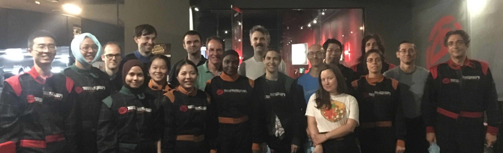
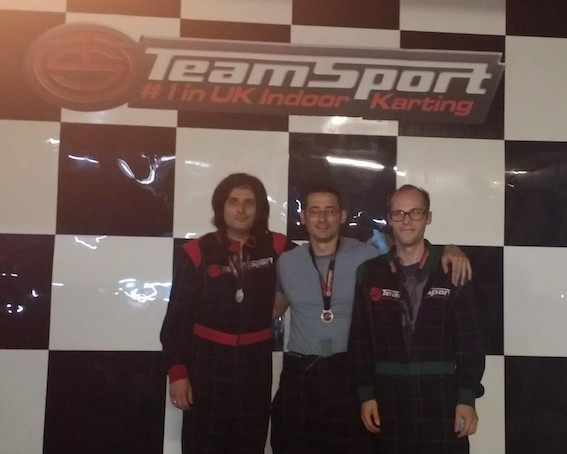
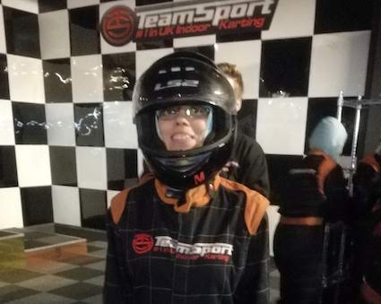

Summer 2019 saw department staff and students stepping away from their research for two fun socials. After a typically mathematical vote, the winning options were decided: go-karting and a boat trip on the River Thames.


And they’re off!
The go-karting event took place on the hottest day of the summer, so many people were grateful to be indoors. The location was Team Sport Karting in Tower Bridge. Drivers were placed randomly into two groups, and after some practice runs received average lap times for the circuit. They were then sorted into two groups based on average times, and this time raced in groups, with first, second and third place medals on offer. Shenanigans ensued that wouldn’t be out of place in an episode of classic TV show ‘Wacky Races’!
The podium finishers of the A race were Giampiero Marra, Johnny Picken and Marcel Hirt, and the B race honours went to Samuel Livingstone, Niloufar Abourashchi and Ioanna Manolopoulou. An extra special mention also goes to Marcel Hirt who managed the fastest single lap of the day at a frighteningly quick 48 seconds!
Cruise control
The departmental boat trip on the Thames was a more leisurely affair, with a caricaturist, giant jenga, table football and a magician on hand to provide light entertainment.
After a grey start to the day, the weather brightened up as those lucky enough to be on board gently headed across East London from Westminster Pier out towards Thamesmead.
A highlight of the day was the clay pigeon shooting, which took place from the side of the boat. It threw up many surprises! The accolade of highest number of clays shot down unsurprisingly went to pre-activity favourite and all-round crack shot Menelaos Pavlou, who managed an impressive 4 out of 6.


Special thanks go to Codina Cotar and Giampiero Marra, chief organisers for the two events.